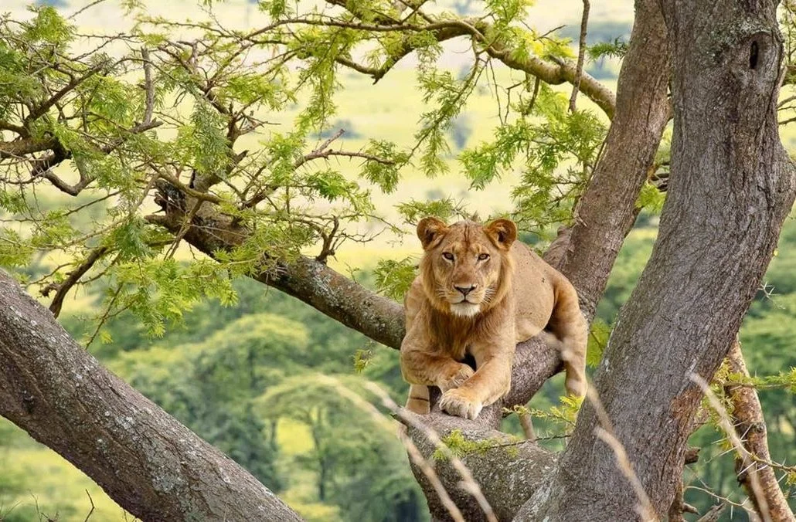

Discover the rare species and unforgettable encounters that make Uganda one of Africa's most remarkable safari destinations
By Explore Uganda Editorial Team·
Uganda is one of the few places in the world where travelers can experience rainforest primates, savannah wildlife,
rare birdlife, and dramatic landscapes in one journey. That variety is what makes the country so special.
In a single itinerary, you can go from tracking mountain gorillas in misty forests to watching elephants on open plains,
cruising beside hippos on the Nile, and searching wetlands for some of Africa's most sought-after birds.
For travelers planning a safari that feels more personal, diverse, and memorable, Uganda offers wildlife experiences
that stand apart. Here are some of the most unique animals and encounters that make the Pearl of Africa unforgettable.
Mountain Gorillas in Bwindi and Mgahinga
Uganda is globally known for mountain gorilla trekking, and it remains one of the country's most powerful wildlife experiences.
In places like Bwindi Impenetrable National Park and Mgahinga Gorilla National Park,
visitors hike through dense forest with expert guides to spend a carefully protected hour near a habituated gorilla family.
What makes the encounter so unique is not only the rarity of the species, but the emotional connection many travelers feel
when seeing the gorillas' intelligence, family behavior, and calm presence at close range.
Chimpanzees and Other Primates in Kibale
Uganda is also one of Africa's best primate destinations beyond gorillas. Kibale Forest National Park
is famous for chimpanzee tracking and offers the chance to explore a rainforest alive with movement, sound, and biodiversity.
Alongside chimpanzees, travelers may spot black-and-white colobus monkeys, red-tailed monkeys, L'Hoest's monkeys,
and other forest species that give Uganda a truly rich primate profile.
Tree-Climbing Lions in Queen Elizabeth National Park

One of Uganda's most unusual safari highlights is the tree-climbing lion population in the Ishasha sector of
Queen Elizabeth National Park. Seeing lions stretched across fig tree branches is a striking sight and one that
many safari destinations cannot offer.
Combined with elephants, buffaloes, antelopes, hippos, and boat safaris on the Kazinga Channel, Queen Elizabeth
delivers an excellent balance of classic safari wildlife and distinctive encounters.
Shoebills, Wetland Birds, and Uganda's Birdlife
Uganda is a dream destination for birdwatchers, and one of the most iconic sightings is the prehistoric-looking shoebill.
Wetland areas such as Mabamba Swamp are especially popular for travelers hoping to see this rare bird.
Beyond the shoebill, Uganda's forests, lakes, rivers, and savannahs support extraordinary bird diversity,
making the country a strong choice for specialist birding tours as well as broader wildlife safaris.
Big Game and River Wildlife in Murchison Falls
Murchison Falls National Park adds another side to Uganda's wildlife story.
Here, travelers can combine game drives with boat trips on the Nile to see giraffes, elephants, crocodiles, buffaloes,
hippos, and a wide range of birds in one destination.
The dramatic waterfall itself makes the setting even more memorable, giving Murchison a blend of scenery and wildlife
that works well for first-time visitors and seasoned safari travelers alike.
Why Uganda's Wildlife Feels Different
What sets Uganda apart is not just one animal. It is the combination of experiences. The country brings together
rare primates, classic safari species, exceptional birdlife, and varied ecosystems in a way that feels compact,
accessible, and rewarding.
You are not choosing between rainforest and savannah. In Uganda, you can experience both. You are not limited to
one headline attraction either. Gorilla trekking, chimpanzee tracking, birding, boat safaris, and game drives can
all fit into one well-planned trip.
If you are looking for a safari that goes beyond the expected, Uganda offers wildlife encounters that feel rare,
immersive, and deeply memorable.
Keep Exploring
Related Uganda Guides
Explore a few more Uganda stories that can help turn curiosity into a fuller, better-shaped trip.